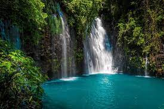

Siargao

Siargao Island is a tropical paradise located in the Surigao del Norte province of the Philippines. This teardrop-shaped island has grown steadily in popularity over the past few years and is often known as the country’s surfing capital. Visitors come from all over the Philippines and across the globe to experience the world-class surf, white sand beaches, beautiful sunsets, natural rock and cave pools, and smaller neighboring islands. There is something here for every kind of traveler, whether you are looking for excitement or relaxation. Siargao Island is usually accessed through Sayak Airport, which is about a 10-minute drive from the municipality of Del Carmen and a 40-minute drive from the main tourist town of General Luna.
Samal

Samal Island is known as the largest resort city in the Philippines because it's home to over 30 resorts dotted in its white-sand beaches and islands like Kaputian Beach, Canibad Beach, Talikud Island, and many more. The best part of staying in Samal Island is the feeling of seclusion and privacy, as it has fewer crowds compared to other resort cities in the Philippines. Aside from beautiful beaches, Samal Island tours will also have you exploring its many snorkeling and diving spots and natural attractions.
Tinago Falls
Part from Maria Christina Falls, Tinago Falls is considered as one of the primary tourist attractions in Iligan, a metropolitan recognized as the City of Majestic Waterfalls. The moniker Tinago Falls was coined from a Tagalog word which means concealed or hidden since the falls requires an estimate of 500 downhill, winding steps before it can be reached. The falls is around 240-feet high and is well-love for its picturesque waters, cascading magnificently into a deep, tranquil puddle which embodies that of a blue-hued lagoon that is ideal for swimming. Beneath the falls is a little cavern where tourists can come in and be drawn by the calming sound of the waters. Furthermore, it is believed that Tinago Falls is a haven for those with worn-out spirits who long to be one with nature. The journey towards the falls’ deep ravine immerses you to diverse flora and fauna.